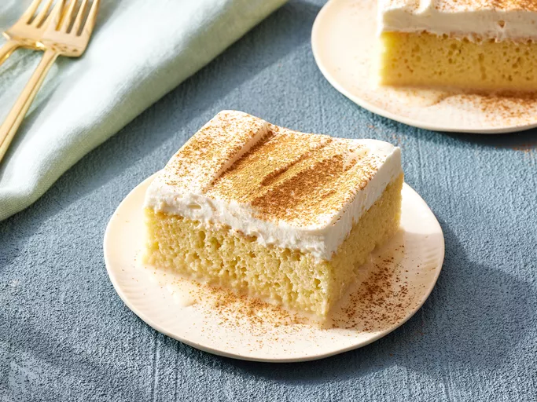
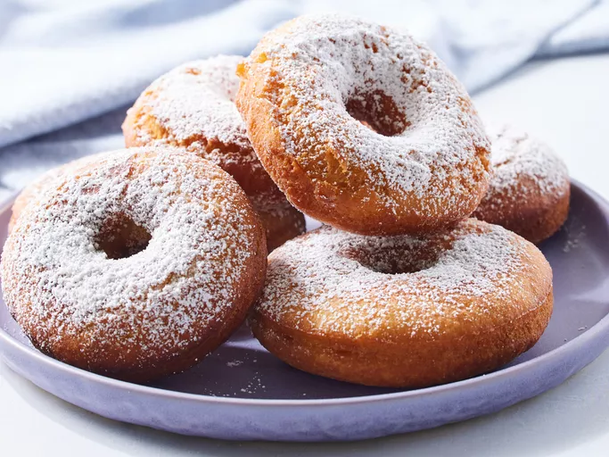
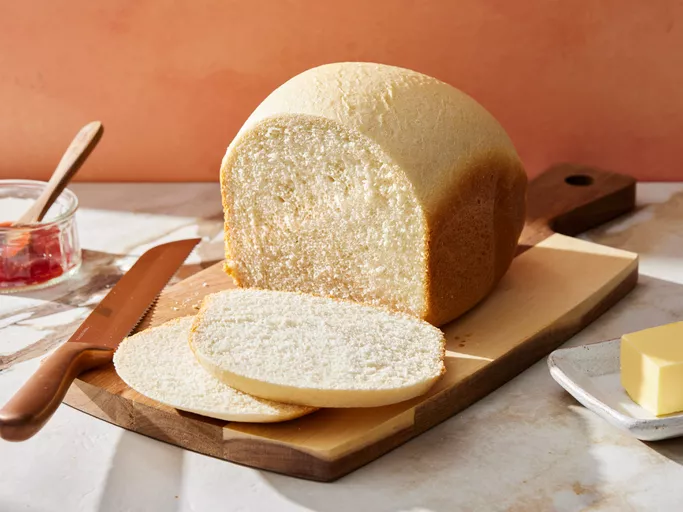

Step-by-step Guides
Below are simple basic recipies.

Simple cake
The quantities of ingredients listed below are what can be used for a cake that will be baked with a 10 inch diameter and 2.5 inch deep cake pan.
See full recipie
- Ingredients: 1 cup white sugar
½ cup unsalted butter, softened;
2 large eggs, room temperature;
2 teaspoons vanilla extract;
1 ½ cups all-purpose flour;
1 ¾ teaspoons baking powder;
1/4 teaspoon table salt;
½ cup whole milk, room temperature
- Directions:
1. Gather all ingredients. Preheat the oven to 350 degrees F (175 degrees C). Grease and flour a 9-inch square cake pan
2. Beat sugar and butter together in a mixing bowl with an electric mixer until lighter in color and fluffy, 3 to 4 minutes. Add eggs, one at a time, beating briefly after each addition, 30 seconds total. Mix in vanilla, about 15 seconds.
3. Whisk flour, baking powder, and salt in a separate bowl. With mixer on low speed, add flour mixture to butter mixture in 3 batches, alternating with milk, beginning and ending with flour. Mix just until combined stopping to scrape down sides if needed, about 2 minutes.
4. Spread cake batter into the prepared pan.
5. Bake cake in the preheated oven until a toothpick inserted into the center comes out clean, about 30 minutes.
6. Remove cake from the oven and let cool in pan on a wire rack for 10 minutes. Invert cake onto wire rack; remove pan and let cake cool completely before frosting. Enjoy!
- Tip: Allow to cool before removing from the pan.

Doughnut
This recipie can yield 24 doughnuts.
See full recipie
- Ingredients:1 ¾ cups all-purpose flour
¾ cup white sugar;
¾ cup milk;
⅓ cup vegetable oil;
1 egg;
1 ½ teaspoons baking powder;
½ teaspoon salt;
½ teaspoon ground nutmeg;
½ teaspoon ground cinnamon
- Directions:
1.Preheat oven to 350 degrees F (175 degrees C). Spray a mini muffin tin with cooking spray or line with paper cups;
2.Place flour, sugar, milk, vegetable oil, egg, baking powder, salt, 1/2 teaspoon nutmeg, and 1/2 teaspoon ground cinnamon in a bowl. Mix dough by hand until well combined but some lumps remain. Fill muffin tin with dough.;
3.Bake in the preheated oven until tops spring back when lightly pressed, but color is not yet golden brown, about 15 minutes.
4.Pour melted butter into a bowl. Mix 1/3 cup sugar, 1 tablespoon cinnamon, and 1 teaspoon nutmeg together in a separate bowl. Dip muffins in the butter coating; immediately roll in the cinnamon dusting.
- Place on a rack to cool

Bread
This white bread. Plain, simple, gets the job done, and tastes great.
See full recipie
- Ingredients:
1 cup warm water (110 degrees F/45 degrees C)
3 tablespoons white sugar
3 tablespoons vegetable oil
1 ½ teaspoons salt
3 cups bread flour
2 ¼ teaspoons active dry yeast
- Directions: Gather all ingredients;
Place water, sugar, oil, salt, bread flour, and yeast into the pan of the bread machine (or in the order recommended by your bread machine manufacturer);
Bake on White Bread setting.
Use oven mitts to carefully remove the bread pan from the machine.
Remove bread from the pan and let cool completely on a wire rack before slicing.
- Tips: Allow to cool on a rack